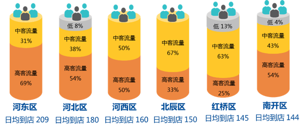
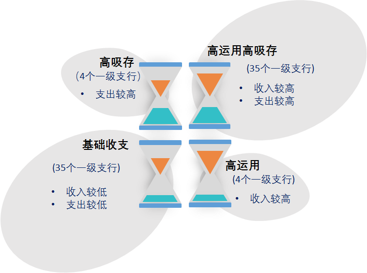
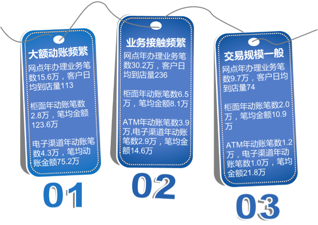
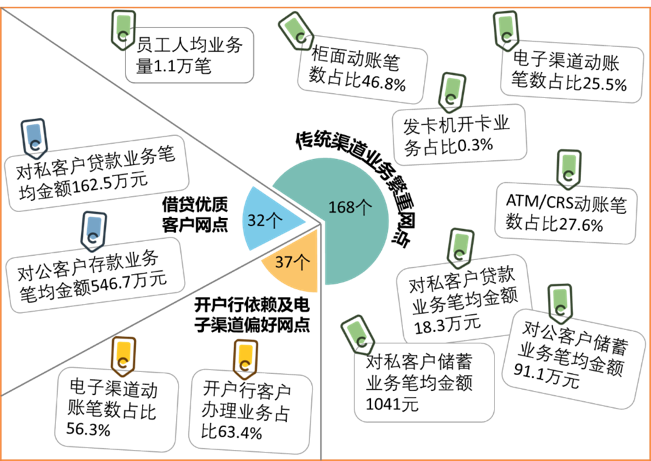
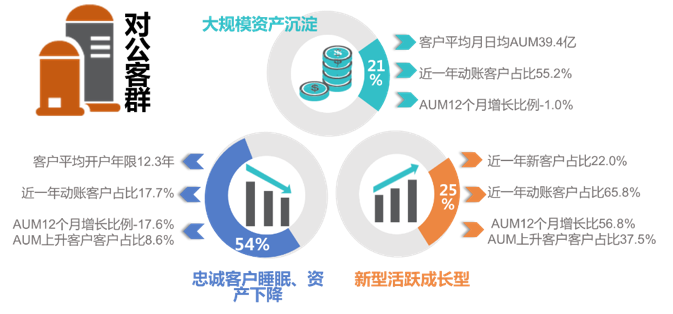
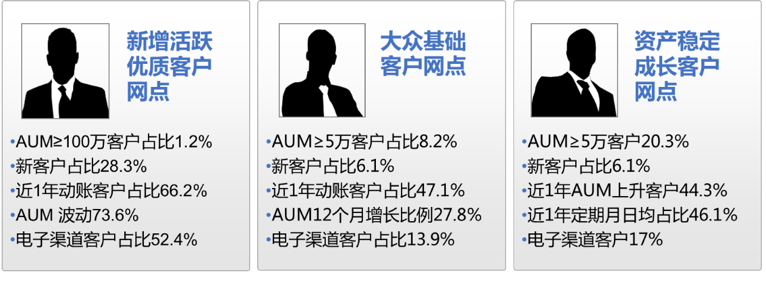

智慧银行大数据分析
作者：天津银行信息技术部
近几年，随着移动互联时代的到来，银行纷纷尝试打造智能化、创新型网点。天津银行也在积极探索如何提升网点服务和客户体验，并在2017年进行了大规模的网点撤并。
本次分析以撤并后的网点作为分析主体，收集了核心、柜面、手机银行、网银、银联前置、理财、基金、电子国债、贷记卡、中间业务、个人贷款、对公信贷、ECIF等XX个系统的数据，尝试了诸多数据挖掘算法，采用了描述性分析、主成分分析、相关性分析、聚类分析等多种分析方法。让大数据告诉你，怎么让网点更“智慧”。
我们先从认识自我开始~
我们的网点都分布在哪？
天津辐射全国！
截至2017年底，全行共设有XXX个网点，其中，XXX个网点正常营业，遍布天津、北京、上海、成都、济南、石家庄等XX个城市，其中大本营天津设有XXX个网点, 集中分布在市内六区和滨海新区。
请看地图关于更多天津市网点分布
Check it Out
我们的人员配备怎么样？
年轻有活力！
我行网点员工的平均年龄XX岁，XX% 的员工年龄在XX岁及以下，真是元气满满呢，男女比例也存在明显差异。
Check it Out我们的智能设备配备如何？
智能加速！
XXXX年，天津银行投放了第一台ATM，这台老古董现已经“寿终正寝”了
近X年来，天津银行紧跟时代潮流，网点智能设备的 配备陡增
Check it Out
目前，网点正常使用的设备平均有XX台，各类型设备配备情况，看图
Check it Out网点的基本情况我们已经清楚了，那在网点办理业务的客户情况又是什么样呢?
现有XXX家网点开户的客户来看，对公客户有XXX万，对私客户有XXXX万。2017年，对公客户新增XXXX，个人对私客户新增
且5家外地分行2017年
对公客户新增长平均超过XX%
对私客户新增长更是高达XX%
Check it Out
对私客群年龄特征如何？
XXXX年，我行对私客户主要以老年群体（XX岁以上）为主，近几年客群结构优化小见成效，目前 中年群体(XX-XX岁) 已成为客群主力
Check it Out以下是老年客户数前十名的网点，有X个分布在和平区，要多关注老年人的需求哦，可能自助设备对他们来说太复杂了~
Check it Out贵宾客户有地区偏好吗？
高客流量网点都在哪呢？
2017年，全行网点日均到店客户数平均XXX位，但地区差异较大，最高河东区XXX位，最低宝坻区仅XX位。日均到店量前6的地区并不全是市内六区哦~
Check it Out

排名前XX%的网点日均访问客户平均高达XXX，均分布在天津地区，是均值的 X倍 ！这么频繁的客户接触，咱们的客户经理是不是可以有所动作呢？通过数据探索，XX家客户访问量高的网点，主要表现为3种：
网点客户AUM高
客户经理相对较少
要忙不过来了，加紧人员调配啊！
网点客户AUM高
客户经理相对充足
客户经理，要注重客户的营销，看你的了~
客户经理相对充足
网点客户AUM一般
客户经理配备偏高
保持好客户关系，挖掘客户潜能！
客户经理配备偏高
网点客户流量这么大，都来干什么了?
在刚刚过去的2017年，全行网点共办理业务XXXX万笔业务，平均每个网点办理XX万笔业务。也就是说，每个网点办理日均受理XXX笔业务！这可是笔不小的数。
Check it Out那么，问题来了
客户是否更偏好在开户行办理业务？
柜面压力大吗？
办理业务能否通过自助渠道实现？
现有的设备配备够用吗？
我们通过数据探索为你一一解答。
Check it Out客户流动性较强
剔除批量开卡业务后，2017年客户在非开户行办理业务笔数为 XXXX万 笔，占总业务笔数的 XX% ，客户流动性还是很强的。尤其是天津地区。
Check it Out柜面压力不均衡
通过对网点2017年整年的交易量的分析，来网点客户还是更偏爱在柜台办理业务。
Check it Out柜面人日均业务量XX笔，业务量XX笔以上网点有XX个，业务量XX笔以下的网点有XX个。柜面压力还是很不均衡的~
Check it Out除了员工调配以外，如何缓解柜面压力呢？
柜面业务有多少现金业务可向自助设备引导呢？
柜面业务中超过XX%的业务是基础的存款、取款和转账业务。
难道是由于金额超限而无法在存取款机办理吗？
答案是：
只有XX万笔是单笔金额超限（单笔取款超过X万或单笔转账超过X万），也就是说: 有 XXX万 笔的业务可以转由自助设备实现！
目前，网点的卡的交易量有XXX亿，以平均卡折比来看，是存折类交易量的XX倍。即使卡折交易量比例最低的网点, 卡交易量占比也为XX%，网点在配备机具的时候记得考虑到机具类型~
Check it Out
柜面业务有多少发卡业务可向自助设备引导呢？

2017年全行发卡量为XXXX，其中XX%的开卡是通过柜面进行操作。剔除批量开卡数据，天津地区网点柜面年平均开卡量为XXX，但发卡机使用率较低，仅有XXX%，其他地区发卡机使用率达XXX%。
发卡机还是可以好好利用起来~
Check it Out
设备够用吗？
2017年网点的平均现金类设备使用度（网点每台ATM/CRS一年平均办理业务量）为XXX笔，平均使用年限为XX年。
但是！现金类设备使用度也出现了明显的两级分化。
现金类设备使用度前XX% 均值为XXXXX，是使用度后XX%的 X倍！
前XX个使用度高的网点中，有10网点设备使用年限超过均值，最高达XXX年，要注意设备的更换的检修哦！
尤其在柜面业务向自助机具引导后，现有的机具使用度又会大幅度增加，平均在原使用度的基础上增加了 XX倍！ 机具的调配还是很有必要的。
Check it Out
客户来网点办理了这么多业务, 网点的利润情况如何呢？
目前行内总账系统核算账面利润的粒度为一级支行，建议后续细化利润核算粒度。基于此数据现状，并且考虑到当地政策、区域保护等影响利润结构的不可控因素，本次仅对天津地区78家一级支行的利润构成进行分析，寻找出以下特点：
Check it Out支行的资金运用及吸存能力基本匹配，主要集中在高运用高吸存和基础收支类

利润高低受对公业务影响度大
9家利润高的支行中X家支行的收入主要依托于利息收入，且利息收入中XX%以上来源于对公贷款。
XX家利润稍低的支行的收支结构分析：收入来源主要为利息收入的有XX家，其中XX个支行个贷利息收入较高；85%的支行利息支出主要为个人存款。
Check it Out
利润结构区域性明显
滨海新区、北辰区、津南区、静海区主要为基础收支型网点
东丽区、蓟州区、红桥区、河北区表现为对公存款型网点
和平区、武清区集中表现为对公贷款型网点
宝坻区、西青区、宁河区则为对公综合性网点
河西区、南开区、河东区， 则为业务均衡、客户均衡型网点
除此之外，我们还对网点进行了聚类。分别以网点交易行为、网点交易结构、网点对公客群、网点对私客群四个主题对网点做了全面的数据探索。
Check it Out网点交易行为特征表现：

Check it Out
TIPS1：大额动账频繁型网点：客户资金流量大，可重点关注客户的资金动向原因及规律，以便为客户提供专享资金规划服务。
TIPS2：业务接触频繁型网点： 一方面优化网点功能分区，另一方面依据客户价值高低合理配比客户经理数量。
TIPS3：交易规模一般型网点：关注网点运营成本，例如网点面积、设备配备情况。
Check it Out
网点交易结构特征表现：

Check it Out
TIPS1：传统渠道业务繁重型网点：对网点进行合理的人员配备，注重柜面业务效率和自主设备的引导。
TIPS2：借贷优质客户型网点：客户整体价值较大，注重客户关系维护，加强对客户“朋友圈”的探索，以优带优。
TIPS3：开户行依赖及电子渠道偏好网点：加强电子渠道端的产品推送。
Check it Out
网点对公客群特征表现：

Check it Out
TIPS1：忠诚客户睡眠、资产下降型网点：以关注和预警为主，防止进一步流失；对经营情况较好睡眠客户，采取适当激活策略。
TIPS2：大规模资产沉淀型网点：重点关怀、产品精准营销，进一步提升企业粘性和忠诚度，进而提升企业价值贡献。
TIPS3：新型活跃成长型网点：潜在的主要价值增长来源，积极服务成长型较好的企业，助力其经营发展，引导资产的行内沉淀。
Check it Out
网点对私客群特征表现：

Check it Out